État du calcul : 12/12 configurations principales terminées (le run multi-contrôle contient cinq axes); contrôle flux réduit : complete; contrôle diagonal : complete. Ce document se met à jour en relançant build_reader_report.py.
Pic Cv et pic χ sont des repères physiques calculés séparément par taille. L’IC bootstrap à 95 % du pic χ provient du fichier de référence. T0 est le seuil choisi par le pipeline, ramené en température si l’axe est monotone. Les deux écarts séparent proximité avec Tc exact et proximité avec le pic χ fini; T0 est une seule exécution, sans IC ici.
| Taille | Pic Cv | Pic χ (IC bootstrap 95 %) | T0 brut | T0 − Tc exact | T0 − pic χ | Conversion |
|---|---|---|---|---|---|---|
| L=8 | 2.350 | 2.470 [2.470, 2.580] | 2.340 | +0.071 | -0.130 | T0 converti en température |
| L=12 | 2.390 | 2.440 [2.390, 2.470] | 2.380 | +0.111 | -0.060 | T0 converti en température |
| L=16 | 2.330 | 2.400 [2.370, 2.420] | 2.340 | +0.071 | -0.060 | T0 converti en température |
| L=24 | 2.300 | 2.360 [2.320, 2.370] | 2.340 | +0.071 | -0.020 | T0 converti en température |
| L=32 | 2.290 | 2.340 [2.330, 2.340] | 2.270 | +0.001 | -0.070 | T0 converti en température |
| L=48 | 2.270 | 2.320 [2.300, 2.320] | 2.270 | +0.001 | -0.050 | T0 converti en température |
| L=64 | 2.280 | 2.300 [2.300, 2.310] | 2.270 | +0.001 | -0.030 | T0 converti en température |
Le petit trait vertical orange du graphique T0 montre l’étendue des 5 lignes de contrôle les plus proches; il ne s’agit pas d’un intervalle de confiance.
Pour chaque taille L, le pipeline reçoit un tableau résumé de 76 températures, pas une trajectoire brute de spins. Les observables viennent de la simulation 2D Ising par grappes de Wolff : 3 chaînes, 4 000 mesures et 500 mises à jour de chauffe par chaîne et température; les IC physiques sont issues de 500 réplications bootstrap en blocs de 80 mesures. Le n=76 des couches géométriques est le nombre de lignes analysées, pas le nombre de spins L². Les sources et scripts sont dans l’archive jointe.
Le benchmark conserve la chaîne entière : fichier et choix des flux/axes, scan du seuil et optimisation Monte-Carlo, 29 estimateurs, Q1–Q6, cascade T−2 à T+2, F1/F2 avant/après, Voie 1 et Voie 2, puis niveaux L1–L7a/L7b et lecture. La quantité TLog produite par le code est une couche de cette chaîne; elle n’est pas utilisée ici comme substitut à l’analyse complète. La formule exacte, les rôles et les réserves sont détaillés dans le guide de lecture.
Une ligne par run et contrôle. L7a est le vote de cohérence interne; L7b évalue séparément la robustesse. Utilisez le CSV lisible pour les nombres non arrondis, couvertures Q1–Q6, F1/F2, Monte-Carlo et trois ancres.
| Run | Contrôle | T0 rang (%) | T0 axe brut | Vote L7a | Robustesse L7b | Voie 2 |
|---|---|---|---|---|---|---|
| negative_L16_independent_noise_flow | Temperature | 60.506 | 2.340 | up | FRAGILE | complet |
| negative_L16_reverse_row_order | Temperature | 60.506 | 2.340 | up | FRAGILE | ancre manquante |
| primary_L12_temperature | Temperature | 65.914 | 2.380 | up | ROBUSTE | complet |
| primary_L24_temperature | Temperature | 60.506 | 2.340 | up | FRAGILE | ancre manquante |
| primary_L32_temperature | Temperature | 50.064 | 2.270 | up | FRAGILE | ancre manquante |
| primary_L48_temperature | Temperature | 50.064 | 2.270 | up | FRAGILE | complet |
| primary_L64_temperature | Temperature | 50.064 | 2.270 | up | FRAGILE | complet |
| primary_L8_temperature | Temperature | 60.506 | 2.340 | up | FRAGILE | complet |
| sensitivity_L16_multiple_physical_controls | Temperature | 60.506 | 2.340 | up | FRAGILE | ancre manquante |
| sensitivity_L16_multiple_physical_controls | abs_magnetization | 31.657 | 0.506 | up | FRAGILE | ancre manquante |
| sensitivity_L16_multiple_physical_controls | chi_abs_per_spin | 44.406 | 3.272 | up | FRAGILE | complet |
| sensitivity_L16_multiple_physical_controls | Cv_per_spin | 11.871 | 0.695 | up | FRAGILE | complet |
| sensitivity_L16_multiple_physical_controls | Binder_U4 | 31.657 | 0.494 | up | FRAGILE | ancre manquante |
| sensitivity_L16_redundant_energy_flow | Temperature | 60.506 | 2.340 | up | FRAGILE | ancre manquante |
| sensitivity_L16_seed_123 | Temperature | 64.499 | 2.380 | up | FRAGILE | complet |
| sensitivity_L16_seed_42 | Temperature | 63.324 | 2.370 | up | FRAGILE | ancre manquante |
| blind_flux_L64_temperature_energy | Temperature | 50.064 | 2.270 | up | FRAGILE | ancre manquante |
| diagonal_L16_energy_as_target_and_control | Energy_per_spin (diagonal) | 31.657 | -1.623 | up | ROBUSTE | cas diagonal; comparer avec réserve |
Le losange orange est le seuil du pipeline converti en température; les ronds bleus sont les pics de susceptibilité du CSV de référence, avec IC bootstrap à 95 %.
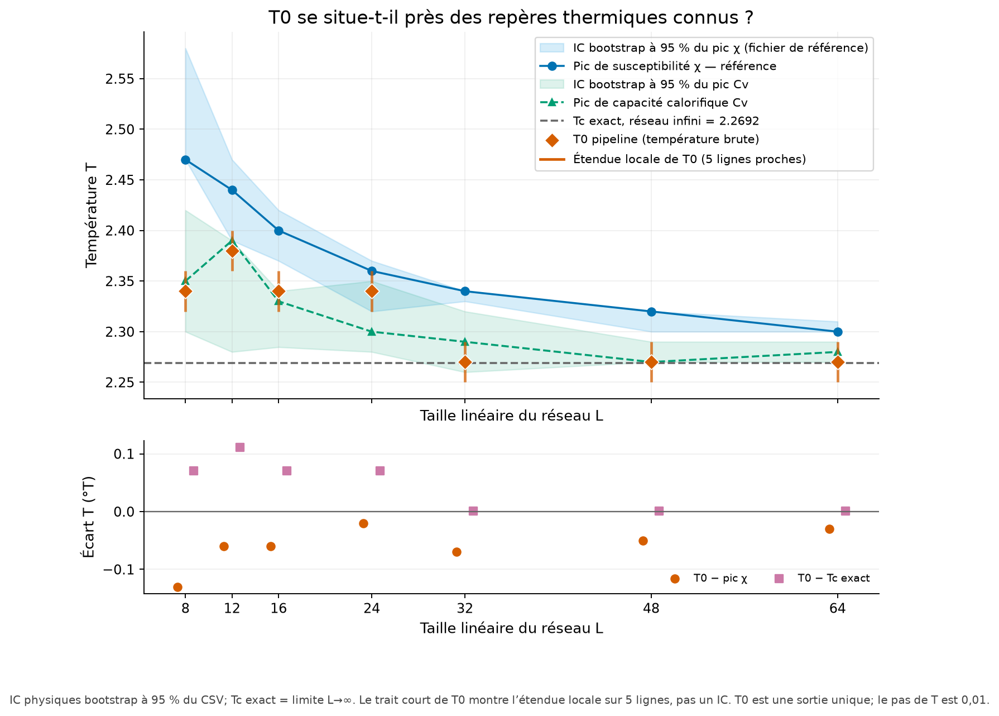
Chaque point est le croisement U4 entre la paire de tailles indiquée; les barres sont les IC bootstrap à 95 %.
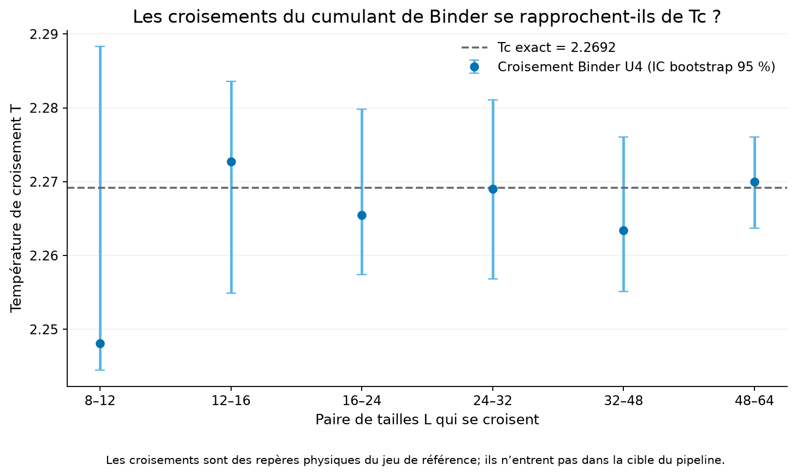
Le graphique conserve les estimateurs séparés; les trous indiquent les ancrages non calculés.
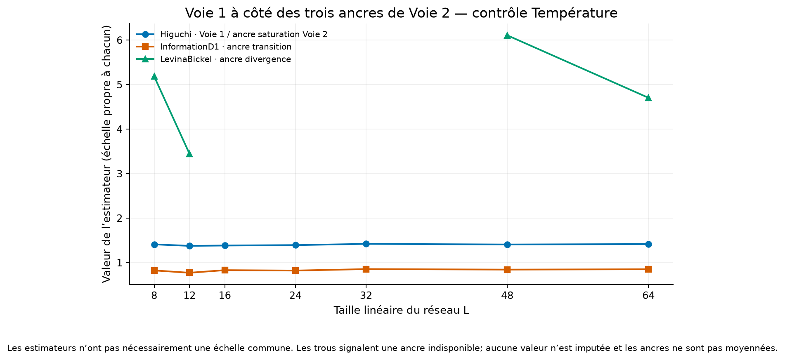
Les cinq courbes montrent les entrées à L=16 et la référence Tc du modèle infini.
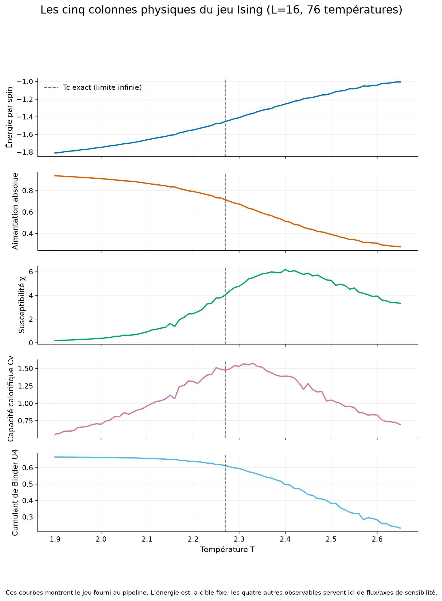
La couleur indique un rang à l’intérieur de chaque question; elle ne compare pas les tailles de score entre questions.
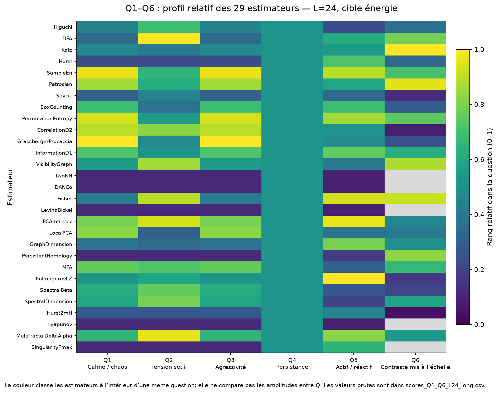
Points bleus : avant. Points orange : après. Les segments relient les coefficients descriptifs du même flux.
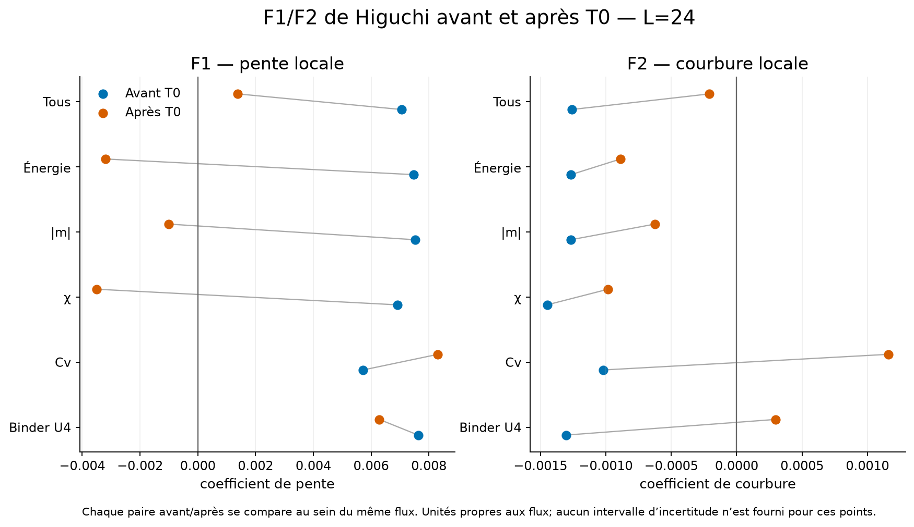
Ce scan est un calcul interne au pipeline; son axe de candidat n’est pas l’axe de température.
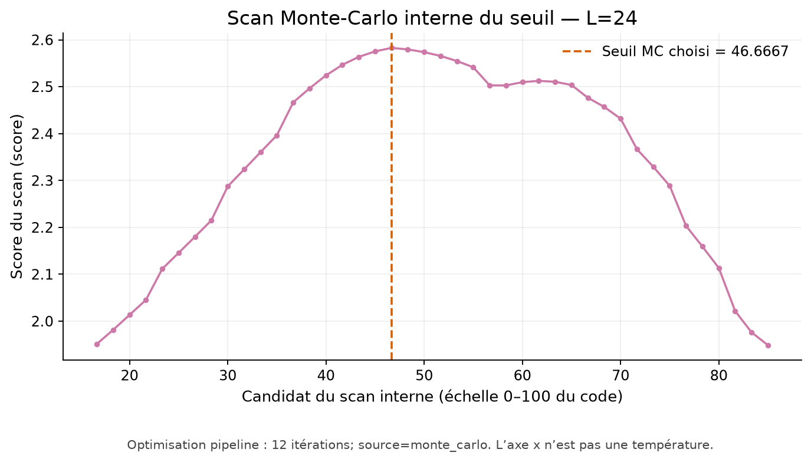
Valeurs exactes des trois ancrages, Voie 1 et médianes disponibles : tableau CSV Voie 1/2 par taille.
Comparaison secondaire exploratoire, décidée après les runs principaux. Le premier run voit tous les observables; le second ne reçoit que Température et Énergie. Les pics et croisements sont des repères du même jeu simulé, pas un jeu externe.
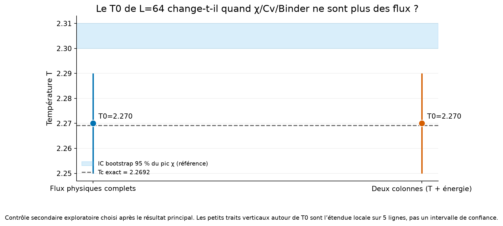
Le cas diagonal est un usage possible du pipeline et il est signalé. Ces rangs ne sont pas un test de Tc; les sorties peuvent être circulaires ou tautologiques dans cette configuration. Le graphique compare des rangs internes, pas les unités brutes des axes.
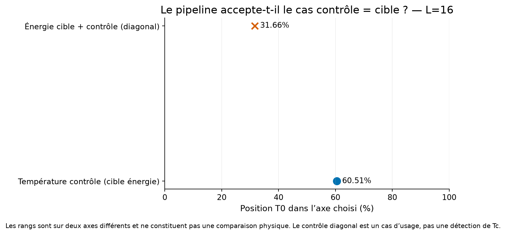
Télécharger les valeurs et avertissements · Addendum de configuration
Chaque ligne réordonne le même jeu selon une colonne différente. Les T0 bruts ne partagent pas une unité; la cible énergie reste fixe. Les contrôles sont Température, aimantation, χ, Cv et Binder; énergie n’est pas utilisé comme contrôle dans ce plan.
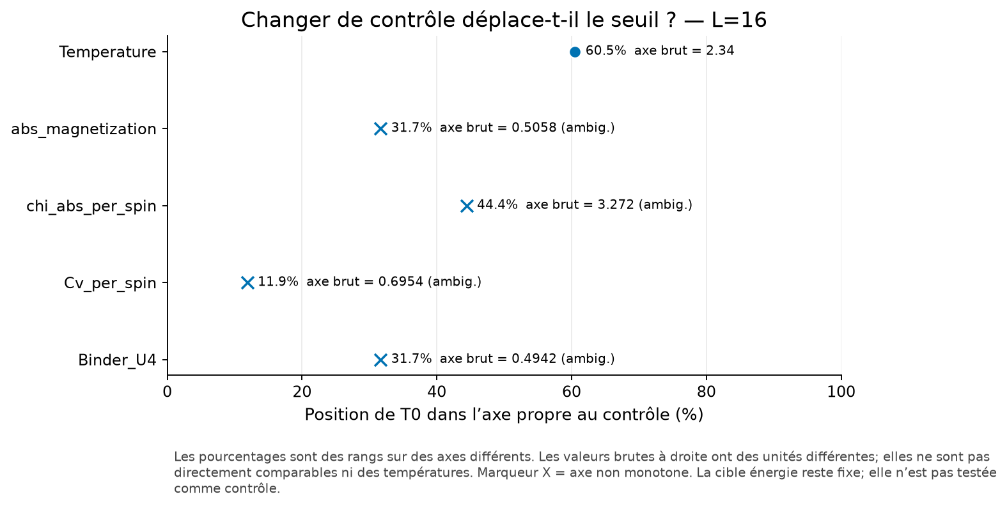
| Contrôle | T0 rang | T0 axe brut | Conversion ambiguë | Axe monotone | Vote L7a | Statut |
|---|---|---|---|---|---|---|
| Temperature | 60.51% | 2.34 | False | True | up | ok |
| abs_magnetization | 31.66% | 0.50581 | True | False | up | ok |
| chi_abs_per_spin | 44.41% | 3.2719 | True | False | up | ok |
| Cv_per_spin | 11.87% | 0.69539 | True | False | up | ok |
| Binder_U4 | 31.66% | 0.49422 | True | False | up | ok |
La première carte indique combien des 29 scores du flux cible énergie sont finis. La seconde compare les profils de rang par contrôle et question; elle conserve les flux observés en sortie dans le CSV, sans moyenner les tailles d’effet entre flux.
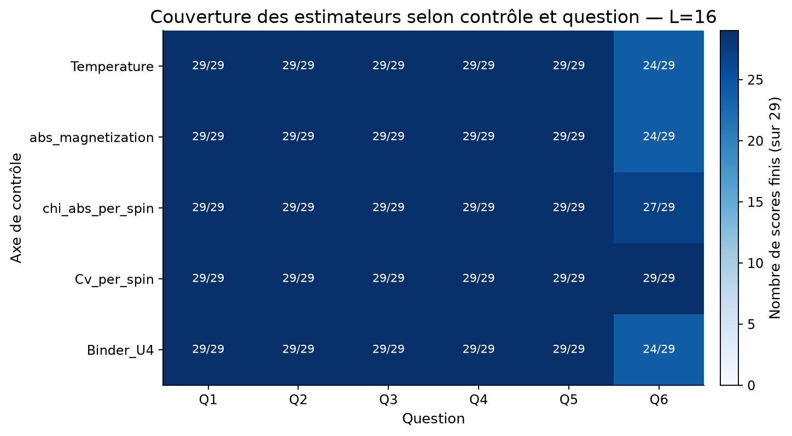
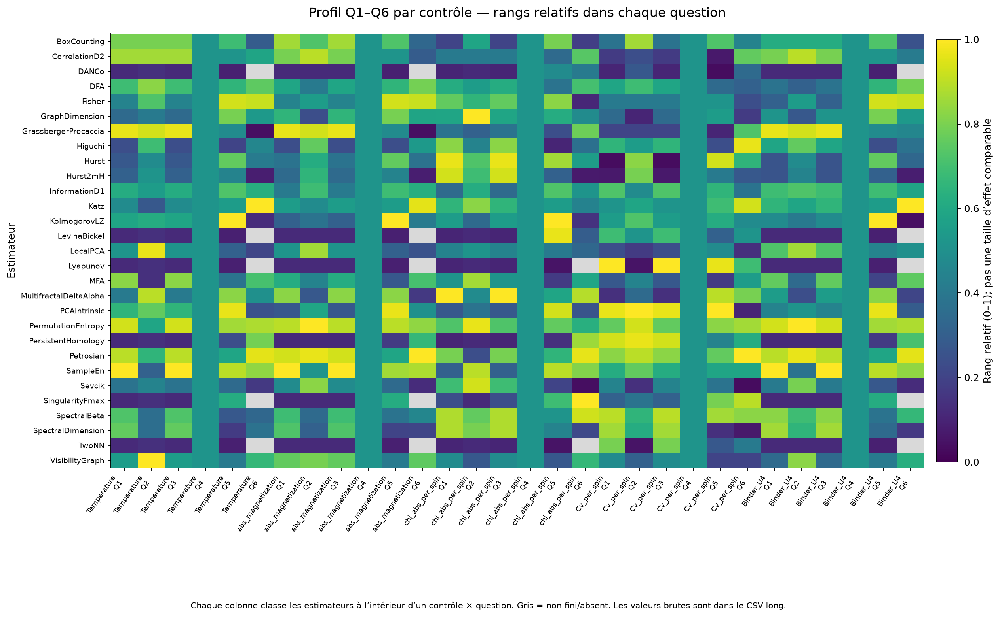
Scores Q1–Q6 tous flux et contrôles en CSV · F1/F2 tous estimateurs, flux et contrôles en CSV
Ce sont des constats de structure des sorties, pas une conclusion physique. Les comptes de valeurs manquantes restent dans la synthèse CSV.
Le protocole compare plusieurs graines, l’ordre inversé des lignes, un bruit blanc synthétique et une copie affine exacte de l’énergie. Ces variantes testent la sensibilité des sorties, pas la validité universelle.
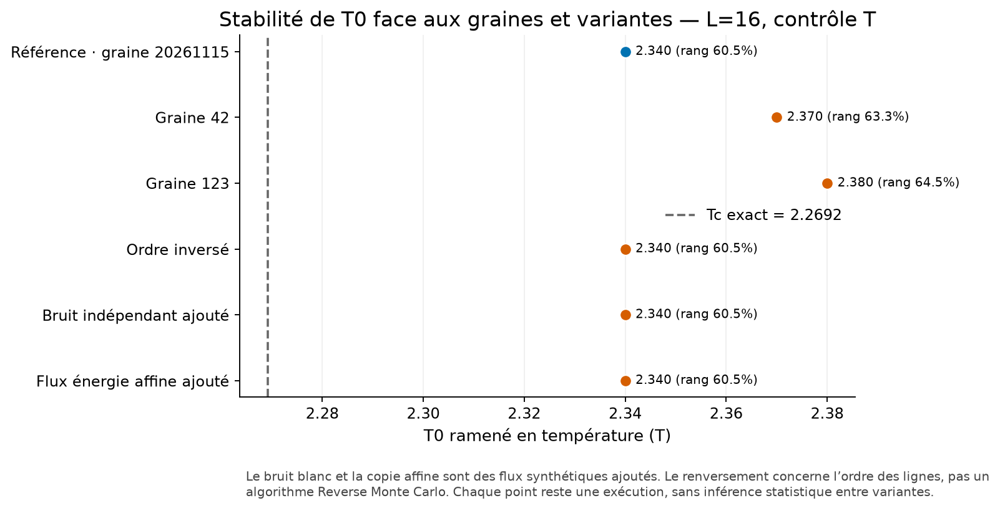
Le pilote a terminé quatre calculs N=76; trois séries courtes (N=7, 15, 30) ont été refusées avant le calcul, car la configuration fast exige au moins 50 points. La marche N=76 donne T0=48,803 % avec ou sans flux additionnels; les valeurs Q et les médianes TLog changent toutefois avec la configuration des flux. Les cas AR(1) stationnaire et dérive lisse renvoient aussi une position T0, qui n'est pas qualifiée de faux positif faute de règle d'alerte pré-déclarée. Une réalisation par cas : résultat descriptif, non confirmatoire.
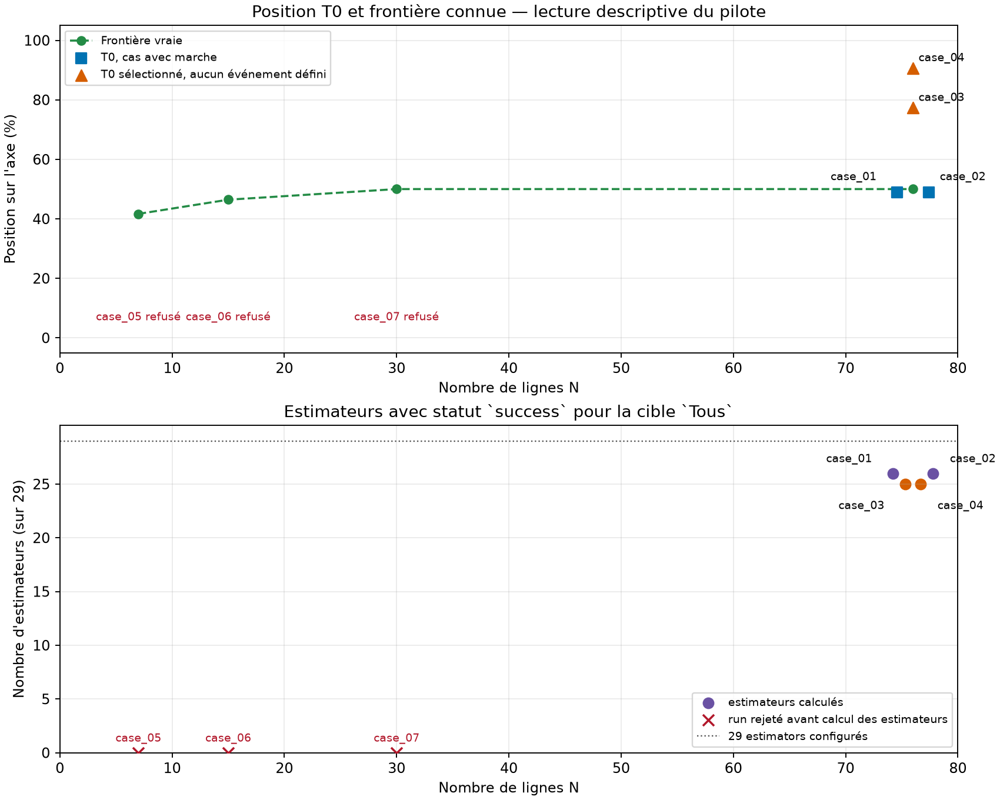
Rapport détaillé · Configuration et empreintes gelées · Résultats notés JSON · Résumé CSV · Protocole pré-déclaré · Vérité génératrice (consultée après les runs)
Les sorties brutes restent la source complète. Les liens ci-dessous ouvrent le JSON maître; chaque dossier de run contient aussi le CSV d’entrée, les figures d’origine et le journal texte.
Protocole gelé · Contrat de configuration proposé · Banc synthétique proposé · Revue de l’avis externe · Texte brut de l’avis · Diagnostic Levina–Bickel (JSON) · Addendum du contrôle à deux flux · Addendum contrôle=cible · Journal des choix et errata · Guide des termes · Reproduire les analyses · Script reproductible de lancement · Résumé CSV complet
Généré depuis les sorties enregistrées localement; aucune sortie brute du pipeline n’est modifiée. Tc exact du modèle carré 2D isotrope à champ nul, pour J=kB=1 : 2.269185314213; référence primaire : Onsager, Physical Review 65 (1944).